About Us
Engineering Good Ltd is a Singapore-registered charity that brings together a community of staff and volunteers with diverse skills, including tech, engineering, and more, to serve the needs of disadvantaged communities in Singapore. Our vision is to engineer a better and more inclusive world.
Our Key Users:
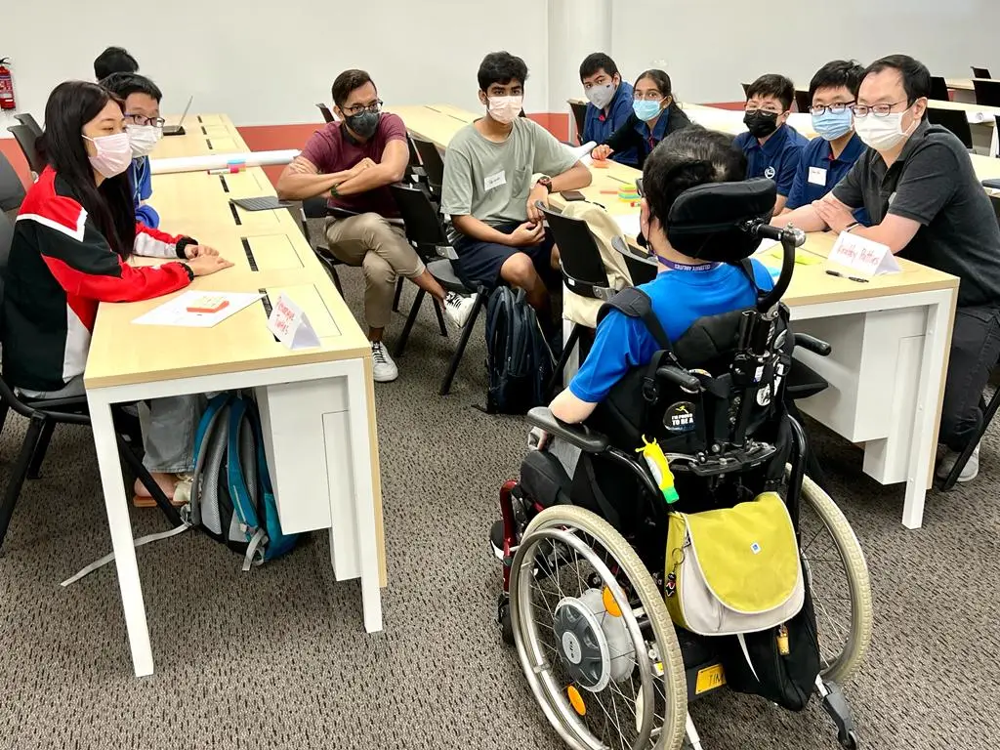
1 – Persons with Disabilities (PWDs) through affordable, open-source Assistive Technology
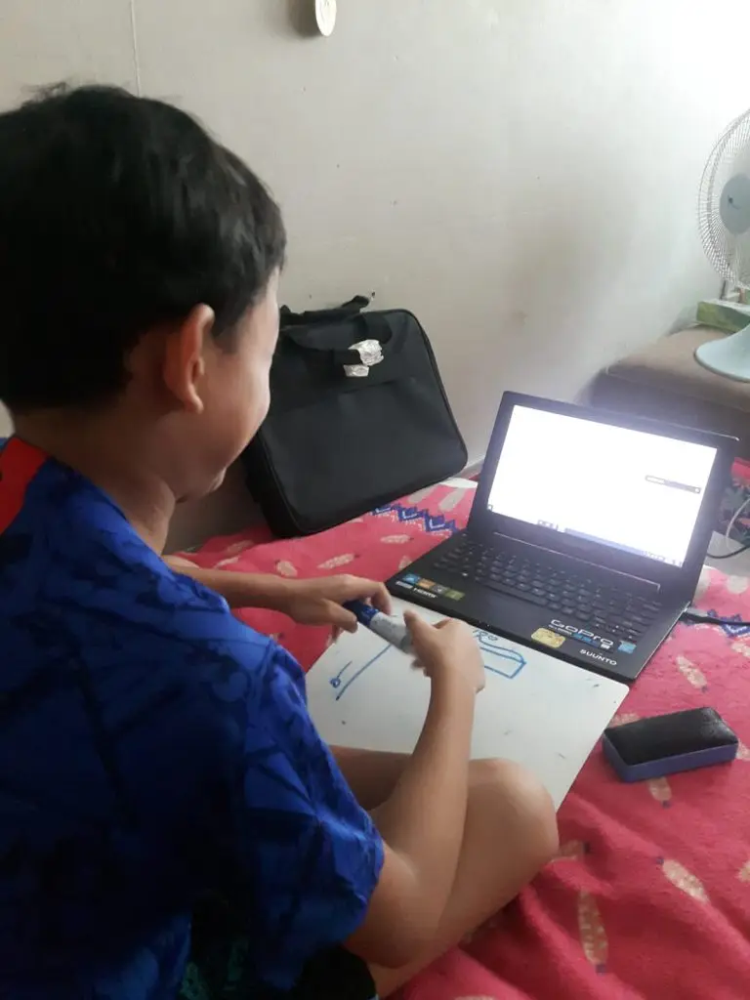
2 – Disadvantaged and vulnerable individuals and families through digital inclusion initiatives
About Engineering Good (EG)
Engineering Good Ltd is a Singapore-registered charity that brings together a community of staff and volunteers with diverse skills, including technology, engineering, and more, to serve the needs of disadvantaged communities in Singapore. Our vision is to engineer a better and more inclusive world.
Through social innovation initiatives, we aim to support disadvantaged and special needs communities by enabling access to digital education and economic opportunities, and by helping them overcome daily challenges through innovative technological and engineering solutions.
Our work currently focuses on two main areas: Assistive Technology and Digital Inclusion programmes.
- Assistive Technology (AT):We leverage the diverse talents of our skilled volunteer community to create assistive technology products that help Persons with Disabilities (PwDs) overcome barriers to daily living – across education, recreation, and employment – enabling them to reach their full potential and live more independently. These AT solutions are realised through the following:
- Tech for Good Accelerator & Makers Programmes: We train, coach, and support youths and disability sector professionals to innovate and develop assistive technology solutions that enable persons with disabilities to participate in learning, carry out daily activities, and lead more fulfilling, independent lives. The problem statements that teams work on are gathered from our Community Partners. Together with our team of skilled technical mentors, we guide youth innovators -students from institutions of higher learning and young working adults – through the process of ideating, developing, testing, and iterating AT solutions in collaboration with the Community Partners and users themselves.
- Inclusive Makerspace: A space where makers and tinkerers can access tools to create open-source AT solutions.
- Digital Inclusion: We empower disadvantaged communities access to digital education, economic opportunities, and social connection through our Digital Inclusion initiatives, which include:
- Laptop Refurbishment and Distribution: Our staff and volunteers refurbish decommissioned corporate laptops and distribute them to individuals who lack access, enabling them to stay digitally connected. The disadvantaged and vulnerable communities we serve include low-income families, displaced workers, single parents, ex-offenders, residents of temporary shelters, nursing home residents, ITE students, school dropouts, migrant workers, domestic helpers, and more. This programme also promotes a “Reduce, Reuse, Recycle” sustainability culture for IT products and helps reduce e-waste. To help fund our programmes, EG supports companies in promoting IT reuse by refurbishing decommissioned laptops, which their employees can buy back as personal laptops by making a donation to EG.
- Digital Literacy Workshops: We collaborate with Community Partners to conduct digital literacy programmes for different disadvantaged groups – ranging from training residents of temporary shelters to write CVs and apply for jobs online, to introducing generative AI tools to support the academic learning of students from disadvantaged families.
Engineering Good Ltd (UEN: 201408320W) is a member of National Council of Social Services (NCSS) and registered with Commissioner of Charities in Singapore as a charity providing humanitarian aid.
Vision
“engineering a better and more inclusive world. “
Our Mother
Board Members
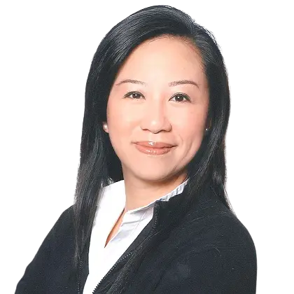
MAY-ANN LIM
Board ChairpersonMay-Ann has over a decade of experience in public policy, tech policy development, and government relations across Asia Pacific. She has worked with global organizations like APEC, ASEAN, PECC, ACCA, and AIC, focusing on thought leadership, government outreach, and stakeholder engagement. Her career includes roles at the World Bank, World Vision, SIIA, and the Singapore Internet Project.
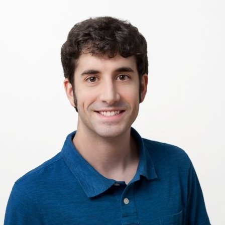
Aaron Cunningham
Board SecretaryAaron is a Senior Technical Program Manager at Google, where he’s led teams in semiconductor design, open source hardware, STEM education/outreach, and autonomous drones. As the former leader of “maker” innovation efforts across Google, he brings his passions for accessibility and innovative problem-solving to Engineering Good, which he joined as a volunteer in 2024.
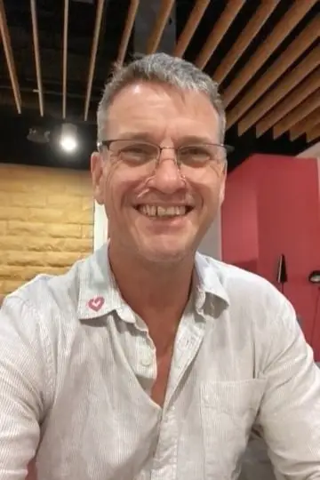
John Le Tissier
Board MemberJohn has over four decades of experience in the construction and facility operations industries. Starting as an apprentice, he has advanced through various management and director roles. In 2017, he moved to Singapore from Australia and has since been an active volunteer with nonprofits serving local communities. John’s passion lies in developing hands-on training in the trade and engineering fields, particularly for the underprivileged. He advocates for the growth of certification programs for trade skills based on practical experience.
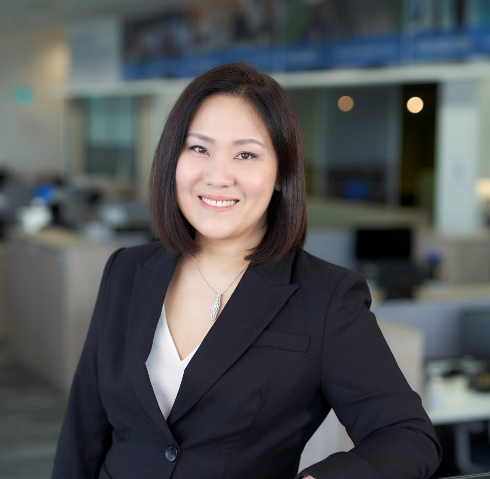
sylvia koh
TreasurerSylvia has over 25 years of corporate experience in real estate, consulting, data and analytics and digital strategy. Sylvia has worked for companies such as Shell, EY, GE, JLL, CapitaLand and KONE. Having been a volunteer with Engineering Good since 2021, Sylvia is deeply passionate about the use of digital and technology to create positive impacts for the disadvantaged and vulnerable communities.
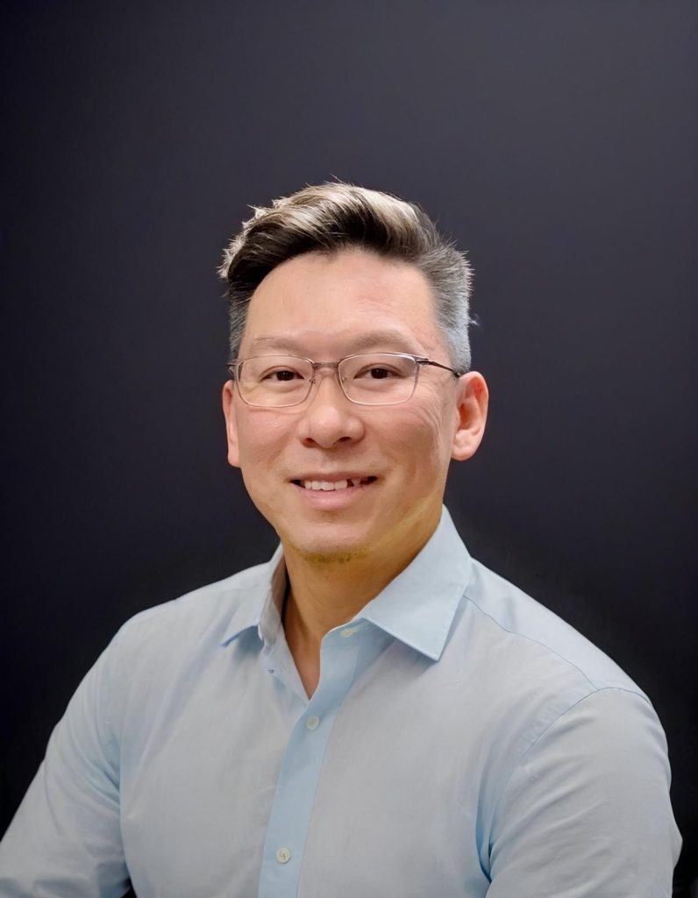
Melvin Ong
Board MemberWith more than two decades of leadership in digital transformation and cybersecurity, Melvin Ong currently serves as the Head of Technology at GuocoLand, where he directs the group’s technology strategy. On the board, Melvin translates his extensive experience in the real estate and property sectors into actionable governance and operational excellence. He is committed to bridging the gap between advanced technology and social purpose, providing the strategic oversight necessary to scale the organization’s mission and deliver lasting community impact.
Our Staff
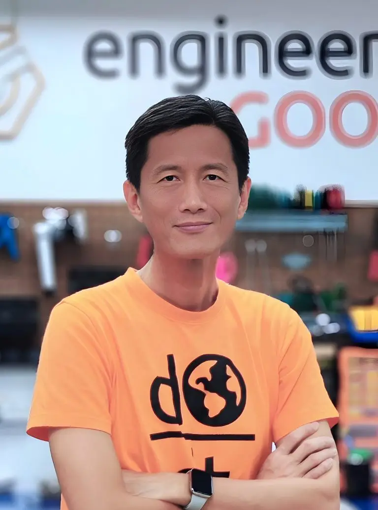
KHENG-WAH KOH
Leadership and General ManagementKheng Wah has over two decades of international experience in innovation management, product management, and digital transformation. His career spans Fortune 500 companies, entrepreneurship, and nonprofits, uniquely positioning him to guide organisations of various sizes and sectors in leveraging innovation and technology for transformation and growth.
Empathetic towards disability and disadvantaged communities, he has volunteered in various capacities, including as committee and board member, with nonprofits serving their needs. An engineer at heart and passionate about social innovation, he has developed assistive technology solutions that have served hundreds of persons with disabilities. Kheng Wah leads the team at Engineering Good, working together to engineer a better and more inclusive world.
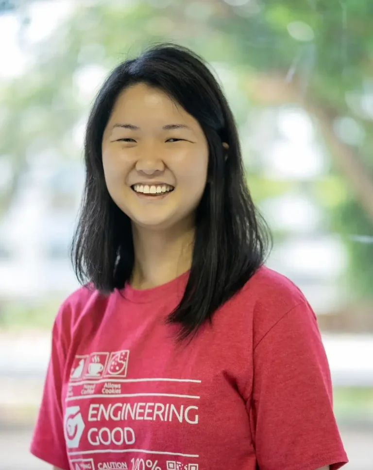
DENISE HO
Impact and Community PartnershipsDenise has a background in fashion communication and several years of experience in Workplace Design. She leverages her business development experience to foster partnerships across social service agencies and connect individuals and organisations with community partners. Deeply invested in sociology, she is committed to building compassionate communities and promoting social mobility.
Since joining Engineering Good in 2020, Denise has played a key role in developing a network of volunteers and community partnerships with social service agencies. She has been instrumental in organising Tech For Good festivals, which bring together youth innovators and industry mentors to prototype assistive technology solutions for persons with disabilities.
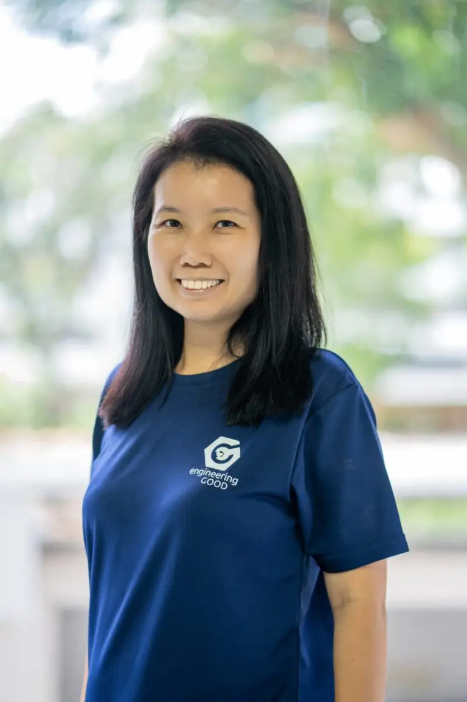
LYDIA LEE
Operations and HRLydia spent her early career in the banking industry before relocating to China with her family, where she dedicated several years to raising her two children as a full-time mom. She now runs Operations and HR functions, driven by a belief in building and sustaining strong relationships as the core of Engineering Good’s culture.
Through her involvement with Engineering Good, she has had the opportunity to connect with many talented and generous individuals. Being part of this community has been a humbling experience for her, as everyone shares a common goal of contributing meaningfully to society. She aims to model for her children to have a strong civic consciousness to take active roles in improving the lives of others who are less fortunate.
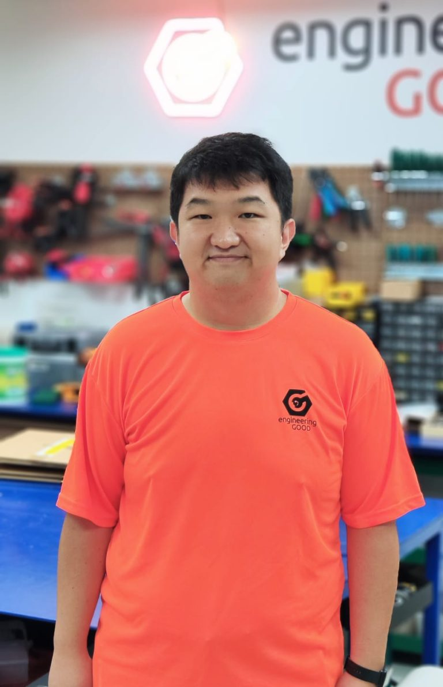
JADEN JIN MING TOH
Assistive Technology ProgrammeJaden has over 10 years of experience in ICT, robotics, and software engineering. He has worked in product engineering roles at companies developing robotics and automation solutions. Jaden has also supported students on electronic and software projects as a Research Assistant at a Singapore educational institution.
He is motivated to apply his technical skills to develop solutions that benefit disadvantaged communities.
Outside of work, Jaden enjoys taking long walks – really long walks.
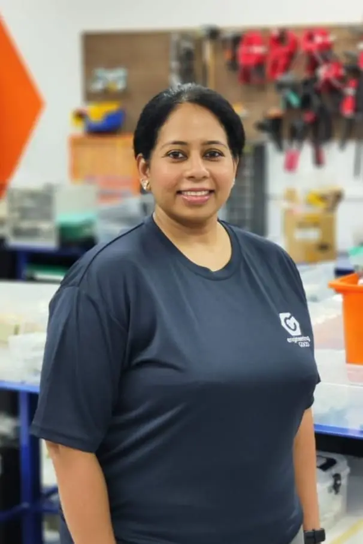
SMITHA GANESH
Fundraising and PartnershipsSmitha has a diverse background in market research and account management, with extensive experience managing client accounts and coordinating regional teams. After a career break to raise her family, she returned to the workforce to manage Fundraising and Partnerships at Engineering Good.
At Engineering Good, Smitha has joined a community of talented and generous individuals, deeply influencing her as she aligns with their mission of creating positive societal impact. Through advocacy and engagement with donors and partners, she aims to demonstrate the power of community in driving positive change and set an example of social responsibility for the younger generation.
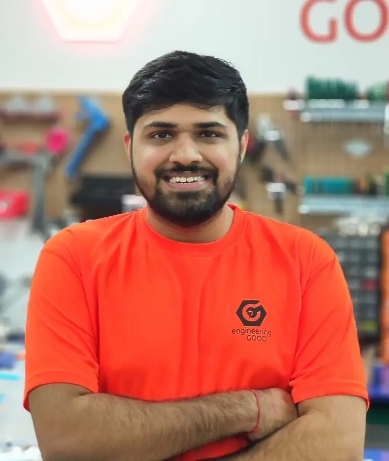
JASEAN ROHIN GILL
Digital Inclusion ProgrammeJasean has a background in IT operations, including device management and logistics. He previously managed the deployment of large fleets of laptops and provided IT helpdesk services for a major organisation in Singapore.
Motivated by a desire to give back through the skills he knows best, Jasean brings both technical expertise and a heart for service to Engineering Good. He is keen to apply his software skills to strengthen laptop refurbishment and testing, while also streamlining inventory tracking workflows.
Outside of work, Jasean has logged over 30,000 hours of RTS gaming, a true marathon of strategy, patience, and problem-solving 🙂, which he now channels into “leveling up” EG’s Digital Inclusion programme.